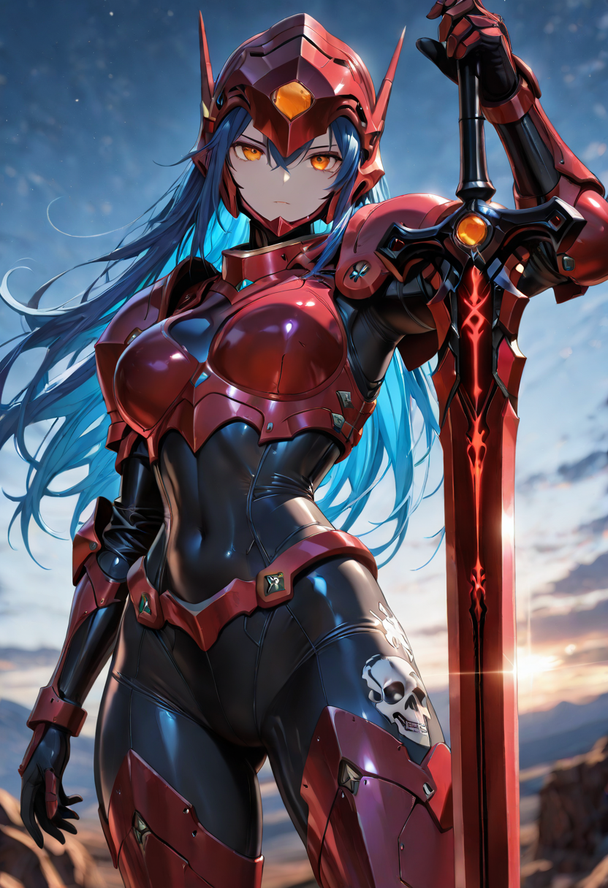
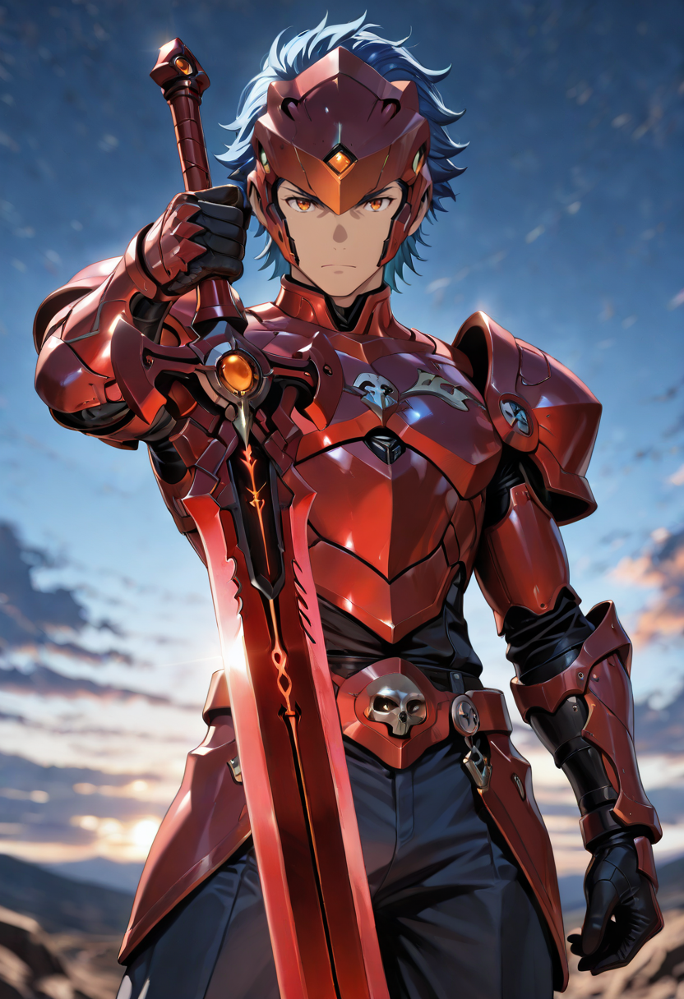

Children of the Campaign
The Crimson Campaign was the empire's most systematic attempt to eradicate the Forgotten. It was not a war fought over territory or resources. It was a declaration about what kinds of life the empire considered acceptable. The soldiers who marched under the crimson banner were volunteers — because no conscript could be trusted to follow the orders that were given.
They trained for forest combat. They trained for targets that did not stay dead. Their red lacquered armor was chosen deliberately: to be seen. To announce their presence without apology. To make the forest understand that the empire did not fear it.
The forest understood. The Crimson Campaign still failed. But the soldiers who survived it carry something in their posture that the regular army does not: the knowledge of what they tried to do, and the determination to try again.